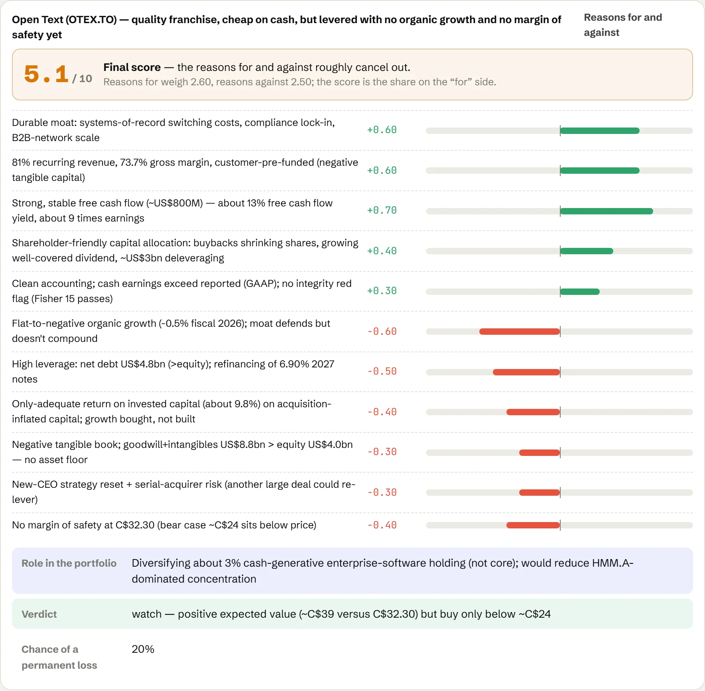

One analyst for the whole portfolio.
Shydel Agent is an AI analyst that works alongside your team. Ask in plain language. It reads the filings, works through eighteen stages, and records the thesis and scorecard on your board, every number cited.
- Ask, or plan first. Answers written for your decision.
- Correct it in place. It learns from every override.
- Record with a gate. Nothing changes the book without you.

Every company in the book, at one of four stages.
A lane per asset class, four columns: Watchlist, Researching, Owned, Exiting. The whole book sits on top.

Public companies, from watchlist to owned.

Banks and insurers, routed to their own lane.
Banks and insurers land here automatically, with the financial playbook from the first stage.

Owned, weighed against the whole book.
Bonds, funds and cash, each weighed against the whole book.

REITs on the board.
REITs, read with the real estate rules: property in the capital base, AFFO as the cash measure.
Every holding, in depth.
Key numbers, statements by year, the thesis, the scorecard and the sources, on one card.

Eighteen stages, in order. No skipping without a reason.
Filings first, then each statement, the business and the decision. Every stage closes with cited findings; a stage that doesn't apply is skipped with the reason.
Run a full principled company analysis of Open Text Corporation (OTEX.TO) for the portfolio, which currently holds it on the watchlist. Classify the company, work every analysis stage with cited findings, write thesis/valuation/scorecard cards, ground the decision in current portfolio weights, and record the thesis and analysis on the board.
The first stage picks the playbook. Only that playbook's rules are pushed after it.
Screens on EV/EBIT, return on tangible capital and growth, plus a full-text search of filings for spin-offs, recapitalisations and other special situations.
Pulls the 10-K and 10-Q from EDGAR, classifies the company (deep value, franchise, growth, special situation, turnaround, cyclical or financial) and tests whether reported earnings match cash earnings.
Tangible against intangible assets, net working capital, net fixed assets, and the capital the business really needs.
Operating cash flow against net income, capital spending against depreciation, free cash flow every year.
Normalised operating income with one-offs removed; operating margin and its trend.
Maturities, rates and covenants, and what refinancing will cost.
Leases, guarantees, litigation and purchase obligations that sit off the balance sheet.
Receivables against sales, their ageing, and whether provisions keep pace.
Where the sales and profits come from, by segment and geography, and how each is moving.
Inventory against sales and cost of sales; obsolescence and write-downs.
Operating leases, owned property, and what they are worth against what they are carried at.
Economic against book depreciation, and the gap between capital spending and the charge.
Switching costs, scale, brands, and returns on capital through a cycle.
The capital-allocation record: buybacks above or below value, dividends, acquisitions, pay, control and related parties.
Earnings power value, normalised multiples, and bear, base and bull scenarios with their probabilities.
What breaks the thesis, the chance of a permanent loss, and the price that leaves room for error.
Verdict, target weight, buy-below and trim-above prices, and whether the position diversifies the book or adds to exposure you already carry.
Sell triggers, what would change the agent's mind, and what to watch in the next filing.
What changes from one asset class to the next.
Same stages and scorecard in every lane; different documents, measures and weight.
| Public equities | Financials | Fixed income | Private equity | Real estate | |
|---|---|---|---|---|---|
| Documents | 10-K and 10-Q from EDGAR | Annual reports and supplementals, often from the company's site | Filings plus the indenture or credit agreement | The data room and the quality-of-earnings report | 10-K, supplemental and lease schedule |
| Earnings | Normalised EBIT, owner earnings | Book value and NAV growth; underwriting and interest income | Normalised EBIT and interest coverage | Adjusted EBITDA, every add-back tested | FFO and AFFO |
| Price | EV/EBIT and P/E | Price to book, price to NAV | Yield and spread over the government curve | Entry multiple against comparable deals | Price to AFFO, implied cap rate, NAV |
| Stages that carry the weight | Valuation · Risk and margin of safety | Balance sheet · Debt and regulatory capital | Debt tables | Filings quality · Debt tables | Leases and real estate |
| Usually skipped | Inventory, at an asset-light company | Receivables, inventory, leases, depreciation | Growth questions a creditor does not need | Nothing, by default | Inventory, depreciation |
Reasons for and against, weighed the way you weigh them.
Every reason for and against, weighted price first, adds up to a score out of ten, a role in the portfolio, a verdict and the chance of a permanent loss.
| Price EV/EBIT and P/E | 30% |
|---|---|
| Return on tangible capital ROIC | 25% |
| Operating margin business quality | 15% |
| Growth sales and operating income | 12% |
| Balance sheet and debt | 10% |
| Management and capital allocation | 5% |
| Other | 3% |
Alongside it, the valuation card (bear, base and bull, buy-below and trim-above) and the thesis card (verdict and sell triggers).

It remembers how your firm invests.
Working memory for the session, long-term memory for the firm. Nothing becomes a rule without your approval.
The desk for one session.
The goal, every tool call and its output, the rules in scope and the cards being written.

Skills and rules, each tagged to the stage where it applies.
Episodes, rules, skills and knowledge, each with a why and a status. Below, examples by stage; click a skill for what it does.
∗Every stage
1Idea sourcing and screening
2Filings and accounting quality
3Balance sheet
4Cash flow statement
5Income statement
6Debt tables
7Commitments and contingencies
8Receivables and provision for credit losses
9Market and segment analysis
10Inventory analysis
11Leases and real estate analysis
12Depreciation analysis
13Business quality and moat
14Management and governance
15Valuation
16Risk and margin of safety
17Decision, sizing and portfolio fit
18Monitoring and selling
1Idea sourcing and screening
6Debt tables
∗Every stage
1Idea sourcing and screening
2Filings and accounting quality
3Balance sheet
6Debt tables
9Market and segment analysis
15Valuation
16Risk and margin of safety
17Decision, sizing and portfolio fit
18Monitoring and selling
The same library, in the app.
Rules, skills, notes and episodes, grouped by stage. Push any of them into a session.

Nothing is promoted without a why.
Every rule carries its why, a status and a confidence. Rules you follow gain confidence; rules you override lose it.

Filings first. Market data when it is needed.
Fundamentals from the filings, prices from a vendor with fallbacks, hurdle rates from central banks.
Filings, XBRL facts and full-text search, each figure with its accession number.
Quotes, history, estimates and the screener.
Quotes and statements for non-SEC companies, labelled unofficial.
End-of-day prices, no key needed.
Yields and inflation, used as hurdle rates.
Annual reports and presentations, cited by page.
Every tool, with its own record.
Each tool is listed with what it does, its parameters and its usage. Here, the government-yield tool behind every hurdle rate.

Runs in your environment.
Your model, your keys, your data. Every action is logged, and nothing changes the book without your confirmation.
Claude by default; other models through LiteLLM.
Every action recorded; changes to the book need your confirmation.
One analysis and one memory, a playbook per class.
Seeded with your framework, deployed alongside your team.